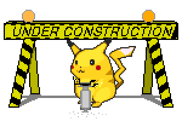

I'm currently a software developer for the Washington State Employment Security Department, working on the Paid Family and Medical Leave program. We're a mix of government employees with contractors from Microsoft, Deloitte, and Crema Development. I'm heavily involved with our full-stack web portal and our financial backend. We use a lot of technology stacks, but the most prevalent are ASP.NET and Vue.js with C#, SQL, HTML, CSS, and JavaScript.
I also occasionally work at the University of Washington as part-time instructional staff for their ongoing full-stack web development bootcamps. I teach various subjects on web development and back-end software development, grade student homework, provide input on student learning materials, and tutor students one-on-one to ensure that everyone is able to succeed. This takes place at the Seattle and Bellevue campuses.
I have vast amounts of knowledge regarding computer hardware and I find working with computers to be enjoyable and rewarding. I'm comfortable with the installation and repair of computer components. I've assembled desktops and servers, and performed repair on all types of hardware configurations. I'm great at troubleshooting any issues, installing (and dual booting) operating systems, managing drive partitions, and many other hardware-related work. I've maintained many virtual machines at home and at work, and I'm always trying out new things when it comes to my personal hardware.
Nothing here yet...
Come back soon!